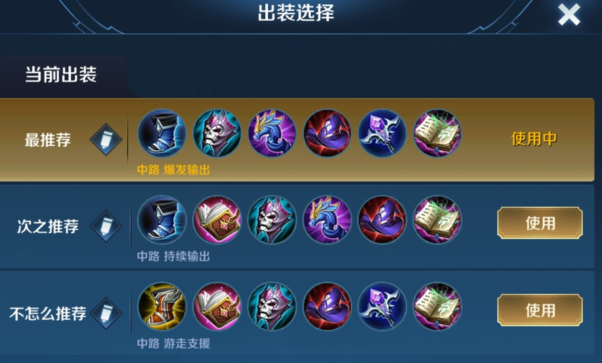
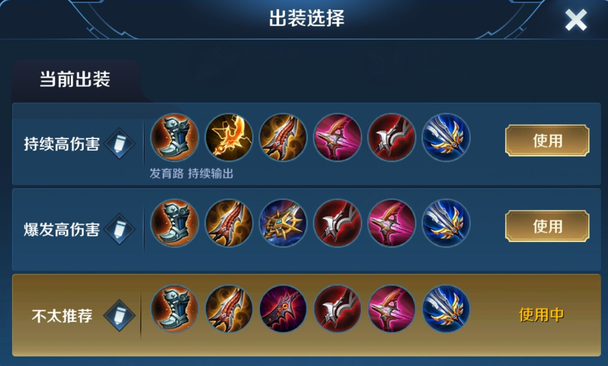
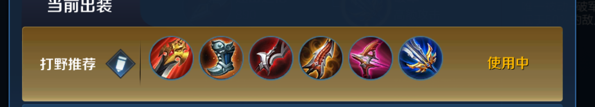
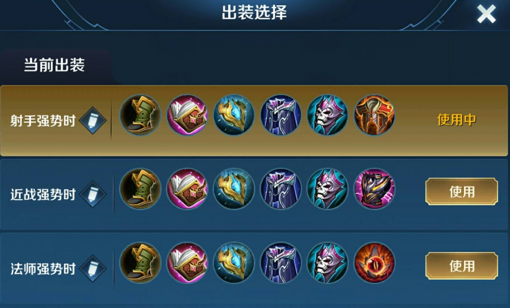
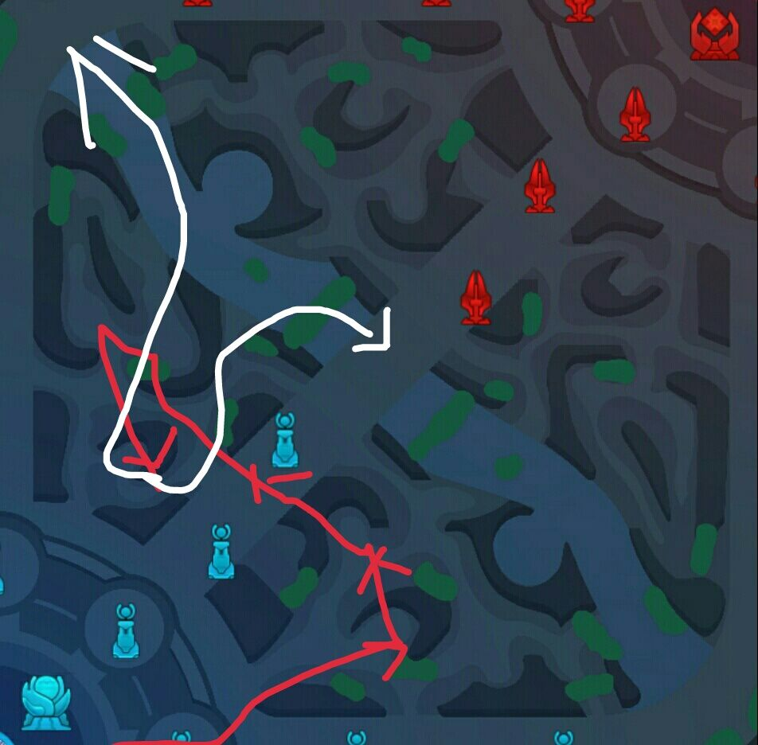
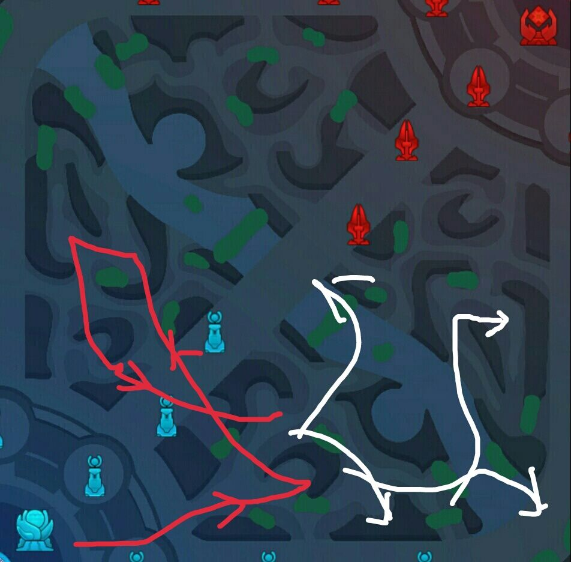

王者萌萌新
当前社会，随着手机等移动设备的发展，手机游戏也逐渐走进人们的生活中，而其中最火的无疑是腾讯出品的王者荣耀了，这款MOBA手机游戏一经出现便风靡大江南北，还有不少外国朋友也在玩这款游戏，逐渐的，这款游戏的也有越来越多的新玩家加入，那么，对于萌新而言，如何了解并快速上手这款游戏呢？萌萌新今天给各位萌萌新带来了王者荣耀这款游戏的很多干货。那么话不多说，直接开始今天的干货罗列！
1、各个位置职能及新手推荐英雄
对抗路（上单）：讲道理不知道应该是什么职能，看是什么类型
打野：支援线上并为线上创造优势，打团时优先攻击对方C位（核心输出位）
中单：为己方提供爆发性或持续性的法术伤害
发育路（射手/ADC）：为己方提供持续稳定的物理伤害，同时推塔
辅助：保护C位（核心输出位）（包括中单和射手，打野和上单有时候也算）
对抗路（上单）（不推荐这个位置）如果非要打上单的话，推荐项羽、夏侯惇、程咬金、亚瑟（上单英雄不难，但这条路比较险恶）
中单：小乔、安琪拉、甄姬、妲己
打野：不推荐，对铭文、操作和意识要求比较高，如果非要打野的话，推荐李元芳，其次兰陵王（因为兰陵王打野很容易，但支援时对意识要求较高）
发育路（射手/ADC）：虞姬、鲁班七号、后羿（后两者段位低点还可以，高一点就需要意识走位）
辅助：庄周（建议出食人鱼出装，不然这个英雄太混（hun四声）了，不利于培养意识）、蔡文姬、瑶（这个其实比庄周还混）、孙膑、廉颇（不嫌弃这个坦克的话）
2、1中提到部分的常见英雄及出装
安琪拉（另外几个中单也可以）出装

安琪拉要求技能命中，由于被动的存在，其技能对相同单位命中地越多，后续伤害也就越高，一般二技能起手，再放一技能接大招，所以二技能命中是关键
鲁班七号（后羿和虞姬出装与其第一套出装相同）出装

鲁班七号伤害很高，所以团战中可以打出极高的AOE伤害（范围伤害），但没有位移，腿又短，又脆，极容易当场去世，建议一定要保护好自己（相对而言虞姬的存活率要更高）
李元芳出装

如果要打野，李元芳的好处在于它的技能，被动可以探听到附近草丛的敌人，还可以对野怪造成野外伤害，二技能是一段很长的位移，因而它无论是存活能力、打野速度还是抓人能力都是很强的
兰陵王出装

真的不建议萌新玩兰陵王，对意识要求太高了，没有下文了，不建议[滑稽]
庄周（食人鱼）出装

食人鱼在出齐两三件装备后，近战能力很强，对于那种经济不是很高的敌人，完全可以粘着他打，二技能多次释放会让二技能伤害更高，就算打不过，跑的也很快，远比低段位下一般的庄周强势地多，也更有存在感
3、草丛三婊
妲己、安琪拉、王昭君
4、要学会多看小地图，至少判断一下是否有敌人来支援自己所在的这条线
5、王者荣耀中伤害介绍
物理伤害：顾名思义，物理属性的伤害，基于被攻击方的物理防御值来进行计算伤害（可被护盾格挡伤害（王者荣耀中没有物理护盾））
法术伤害：同上，法术属性伤害，基于被攻击方的法术防御来进行伤害计算（可被护盾、法术护盾格挡伤害）
真实伤害：不同于上述两种的伤害，无视被攻击方的物理防御和法术防御，并无视一般护盾，可直接对敌方英雄造成伤害，可被真实护盾格挡伤害（真实护盾目前只有瑶的大招有）
PS：拥有真实伤害的英雄不多，其中真实伤害比较高的有典韦、吕布、貂蝉、马可波罗、明世隐
6、如果你真的想打野的话。。。这个四级前打野节奏图送给你，希望你多爱惜一下队友[滑稽]
（红色线为打野路线，白色线为支援或入侵敌方野区路线）
打野1：
打野2：
7、野区资源
蓝buff：增加回蓝速度，提供20%的冷却缩减
红buff：增加攻击力，攻击附带额外伤害
（前期一般都是打野拿，后面随意了）
暴君（小黄色）：获得大量经济
先知主宰（小紫色）：三条路生成三波主宰先锋，替代原有的兵线
10分钟后，暴君和先知主宰消失，转变为
黑暗暴君（大黄色）：提供攻击力和法术强度
主宰（大紫色）：提供生命恢复，并三条路生成三波主宰先锋，替代原有的兵线
20分钟后，黑暗暴君和主宰消失，并在主宰所在的龙坑出现
风暴龙王（巨大黄色）：获得自身最大生命值50%的护盾，同时对身边范围非友方单位进行自动雷击，每击造成4%最大生命值真实伤害
好的，本期推送到这里就结束了，欢迎大家继续关注我们其他内容，我是王者萌萌新，我们下期再见，拜拜
文章内容出自运营号王者萌萌新，未经允许，禁止盗用